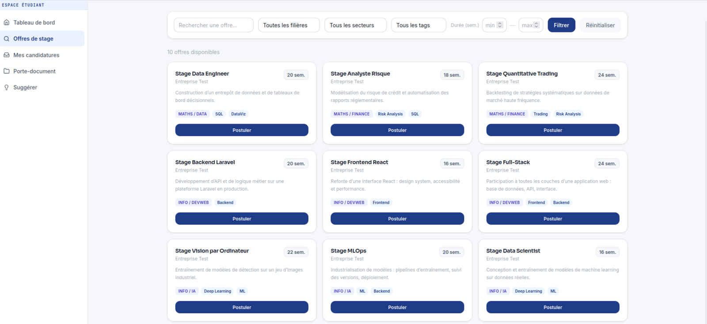

CYEDIN — Internship Platform
A multi-role platform centralising internship search and management for students, companies and academic staff at once. The fragmentation it fixes is the problem I'm living from the student side.
- Owned the backend and the authentication flow across five user roles.
- Each role gets its own space and permissions, and it went to production.
Context
Internship search is scattered across disconnected platforms. In a team of three, we built one platform for students, companies and academic staff.
My role: backend & auth
- One login for all five roles: the platform detects the role and opens the right dashboard.
- Forced password change on first login, so an admin never knows a user's final password.
- Business logic, routing and controllers; a log of admin actions; notifications targeted by filière.
Technical choices
- No REST API, on purpose: Inertia.js links Laravel and React with one session and one auth layer.
- A schema of about twenty entities, and bulk user import from CSV or XLSX files.
Outcome
Delivered on time and deployed to production on Railway. The instance has since been shut down; the source is public.
Lesson: we split the work by MVC layer. Splitting by feature would have balanced the load and kept us out of each other's files.
Built with AI assistance, on frameworks that were new to me. The architecture and decisions are mine to explain.

Facial Recognition with PCA
A Java/JavaFX system that identifies a person from a photo, or correctly rejects unknown faces, using the classic eigenfaces (PCA) method. I owned the architecture, code conventions and Git strategy, led integration, and implemented the projection and identification algorithms.
- Computed eigenfaces from the reduced covariance matrix (AᵀA), making a 40,000-dimension problem tractable.
- Designed a three-criterion recognise/reject decision (Hotelling's T² · reconstruction error · nearest distance), calibrated empirically.
- Evaluated with confusion matrices across three databases; documented the limits (lighting/pose).
Context
Five-person team project at CY Tech: a facial-recognition system in Java/JavaFX using eigenfaces (PCA), tested on three face databases, including Yale.
My role: technical lead
- Led the architecture: package structure, code conventions, Git branch strategy, and integration of everyone's modules.
- Implemented the core algorithms: projection into eigenface space and the recognition decision.
Technical highlights
- Faster PCA: computed from AᵀA instead of AAᵀ, which makes 40,000-dimension images tractable.
- Three checks before accepting a face: Hotelling's T², reconstruction error and nearest distance, calibrated on a validation set.
- Kept 90% explained variance, which beat 98% in testing. JavaFX GUI with a live threshold slider.
Outcome
Recognises known faces and rejects unknown ones when capture conditions are consistent. Strong lighting and head tilt remain the main limit, as expected with PCA.
# adversarial search: pick the optimal move def minimax(board): if terminal(board): return None turn = player(board) best = max if turn == X else min return best( actions(board), key=lambda a: value(result(board, a)), ) def value(board): if terminal(board): return utility(board) scores = [value(result(board, a)) for a in actions(board)] return (max if player(board) == X else min)(scores)
CS50AI — AI with Python
All twelve projects implemented in Python, from breadth-first search and minimax through Bayesian networks and constraint satisfaction to Q-learning, a CNN and BERT attention.
Context
HarvardX's CS50AI (~100 hours), taken on my own alongside my degree. All twelve projects completed: certificate, verifiable with Harvard ↗.
What I built
- Search: shortest path between actors; an unbeatable Tic-Tac-Toe AI (minimax).
- Logic: a puzzle solver; a Minesweeper agent that infers safe cells.
- Probability: Google's PageRank; a Bayesian network for inherited traits.
- Optimization: a crossword generator using constraint satisfaction.
- Machine learning: a shopping-behaviour classifier; an agent that learns Nim by playing itself.
- Neural networks: a CNN recognising 43 types of road sign.
- Language: a sentence parser; word prediction with BERT.
Stack: Python · NumPy · scikit-learn · TensorFlow/Keras · NLTK.
Solutions are not published, per CS50's academic-honesty policy.

Crowd Evacuation Simulator
An agent-based simulation of how a crowd evacuates a room, using a social-force model with real-time animation.
- Vectorised pairwise repulsion forces and obstacle avoidance with NumPy.
- Compared Euler vs. Runge-Kutta integration against the analytical solution to quantify numerical error.
Context
Three-person team project: a real-time simulation of a crowd evacuating a room, where each person is pushed by forces from other people and obstacles.
My role
Top contributor, working across all three modules.
Technical highlights
- Physics in NumPy: vectorised forces between every pair of people, using symmetry to halve the distance computation.
- Live animation in Tkinter with wall and exit collisions, in two scenarios: an open exit, and a pillar near the exit.
- Numerical study: Euler vs Runge-Kutta, compared against the exact solution.
Outcome
Shipped and working. Stack: Python · NumPy · Tkinter · Matplotlib.
Source is on CY Tech's internal GitLab (not public); available on request.

Samedis Neige — Association Web App
A web app automating ski-trip logistics for a 1,213-member sports association, turning three data files into attendance sheets and skill-level groups.
- Lead author of the CSV processing engine, and top contributor on the team.
- Delivered the full lifecycle: needs analysis, design, build, demo.
Context
The Amicale Laïque de Billère (1,213 members) prepared its Saturday ski trips for children by hand in Excel. We built a web app that automates it.
My role: backend developer
- Wrote the core processing engine (traitement.php): it reads the member files, builds attendance sheets and sorts children into ski-level groups.
- Catches data errors: name mismatches, duplicates and missing fields.
Technical highlights
- Plain PHP (required by the course), session login and a dated history of processed files.
- Accepts messy real-world files: .xlsx, .xlsb, .xlsm and .csv.
Outcome
Shipped and demonstrated against the spec; deployment was out of scope. One fix I'd make: replace MD5 password hashing with password_hash().
Source is on CY Tech's internal GitLab (not public); available on request.

heIsWatching — Browser Extension
A cross-browser accountability extension that overlays distracting sites you've blocklisted, built on the WXT framework (Manifest V3).
- Typed design-token theming system and a typed multi-theme engine.
- Externalised JSON content and full English/French i18n.
Context
A browser extension that covers distracting sites on your blocklist with a full-screen overlay: a church-style icon whose eyes follow the mouse, scripture verses and music.
My role: solo developer
I designed the architecture, theming system, data model and roadmap. Built with Claude Code, which I directed rather than hand-writing every line.
Technical highlights
- Chrome, Firefox and Edge from one TypeScript codebase (WXT, Manifest V3).
- Typed theme engine: adding a theme is one object, validated by the type system.
- English/French translations, content stored in JSON, and settings synced across devices.
Roadmap
More verses via a Bible API, Safari/iOS support, per-site music and local-only usage stats.

Robot MacDo — Game
A published, playable game: starting from a base game, I customised sprites, powers, boss behaviour and level design.
Context
At 10–11 years old, I made "Robot MacDo" in Toulouse Pixel School's one-semester game-development program, alongside private C# lessons from a University of Toulouse researcher.
What I did
Starting from a base game, I customised the sprites, powers, boss behaviour and level design.
Outcome
Published and playable: where I first started building software.